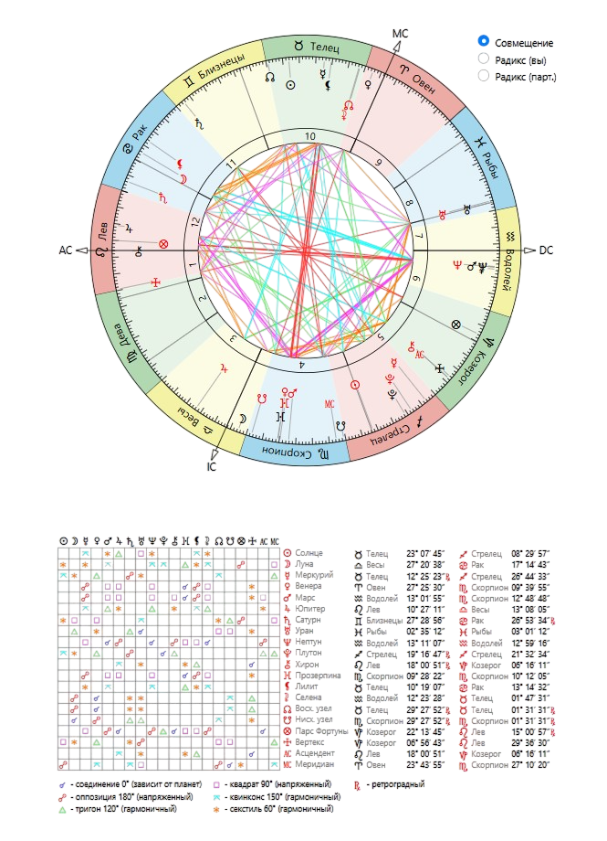
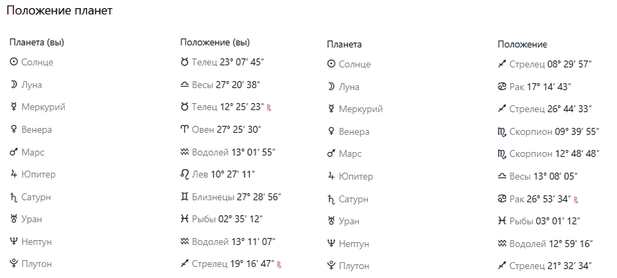

I just wanna be part
of your symphony
of your symphony




Этот аспект говорит о крепкой и надежной дружбе, в которой много взаимного уважения, поддержки и чувства ответственности друг за друга. Вы хорошо дополняете друг друга: одна помогает сохранять порядок, стабильность и уверенность, а другая вдохновляет на развитие, новые идеи и более смелое самовыражение.
Такая дружба особенно хорошо проявляется в совместных делах, учебе, работе и любых проектах, где важны организованность и доверие.
Этот аспект показывает, что вам важно учиться понимать не только слова, но и чувства друг друга. Одна из вас может больше опираться на логику и рациональность, а другая — на эмоции, настроение и внутренние ощущения.
Главное здесь — честный разговор, уважение к разным способам выражать заботу и умение находить компромиссы.
Этот аспект делает общение очень активным и живым, но временами может приносить споры и эмоциональные обсуждения. У каждой из вас сильный характер и своя точка зрения.
При зрелом подходе этот аспект помогает создать сильный союз: вы учитесь терпению и превращаете споры в полезный обмен мнениями.
Может создавать путаницу в общении: одна мыслит конкретно, а другая доверяет интуиции. При открытом общении этот аспект развивает чуткость и способность принимать разные взгляды на мир.
Делает дружбу более серьезной. Помогает строить взрослые и надежные отношения, где ценятся не громкие слова, а реальные поступки, верность и стабильность.
Благоприятный аспект. Между вами легко возникает ощущение свободы и взаимопонимания. Вы не только подруги, но и единомышленницы, вдохновляющие друг друга на творчество.
Делает дружбу глубокой и искренней. Вы помогаете друг другу лучше понимать себя, становиться увереннее и эмоционально сильнее. В этой связи много настоящей вовлеченности в жизнь друг друга.
Разный темперамент может приводить к спорам, но учит уважать чужую силу характера и находить баланс между инициативой и компромиссом.
Сильная энергетика совместных действий. Вы легко вдохновляете друг друга в целях и умеете создавать ощущение движения вперед. Рядом с такой подругой человек верит в себя.
Делает дружбу интуитивной. Одна помогает действовать увереннее, а другая — чувствовать глубже и видеть ситуацию шире. Дружба строится на внутреннем доверии.
Интеллектуальная совместимость. Схожие взгляды на развитие и ценности. Вам легко понимать друг друга в важных вопросах и расширять общие горизонты.
Разные взгляды на мечты. Одна вдохновляет, а другая помогает воплощать идеи в жизнь, соединяя воображение с реальностью.
Отличная команда. Сочетание практичности и нестандартного мышления. Поддерживаете друг друга в развитии и доводите дела до результата.
Учит уважать силу характера друг друга. Если избегать давления, связь становится очень устойчивой и учит важным жизненным урокам.
На одной волне. Много свободы, легкости и понимания, так как вы проходите через похожие жизненные этапы.
Тонкое интуитивное понимание без лишних слов. Стабильные, доверительные отношения, основанные на принятии.
Глубокое понимание на уровне ценностей. Дружба, которая проходит через время и помогает обеим становиться сильнее.
Крепкая и осознанная дружба с потенциалом для долгих лет. У вас есть и легкость, и глубина, позволяющие быть настоящей опорой друг для друга.